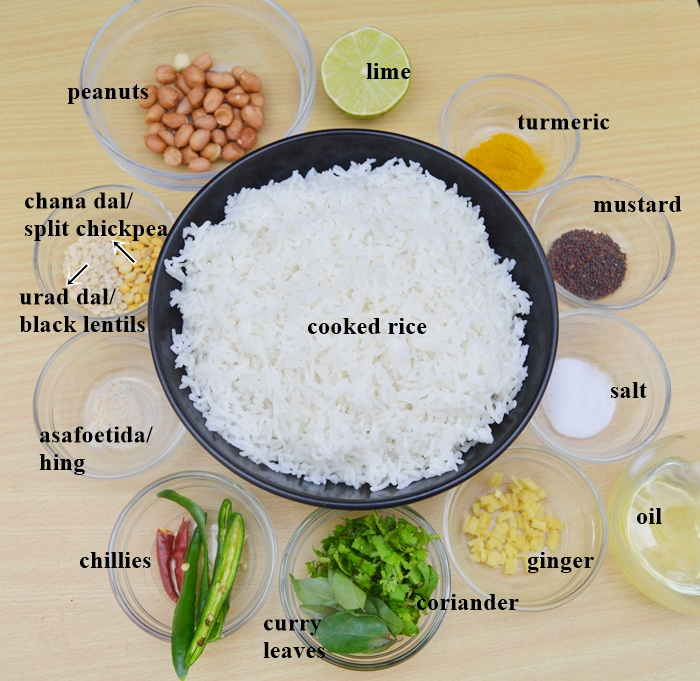
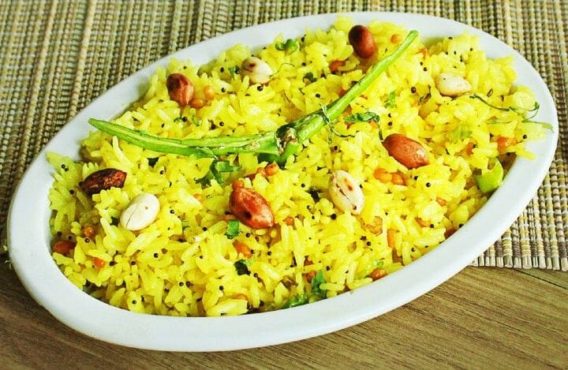

South Indian Recipes
South Indian RecipesBreakfast
Rice items
Sambars and Curry
Sweets
Snacks
 Lemon rice, a popular South Indian dish, is a flavorful and tangy rice preparation that has its roots deeply embedded in the rich culinary traditions of the region. This dish is a testament to the vibrant and diverse flavors that characterize South Indian cuisine. The history of lemon rice is closely tied to the agrarian culture of South India, where rice is a staple crop. It is believed that lemon rice originated as a practical and delicious way to use leftover rice. The simple yet ingenious combination of cooked rice, aromatic spices, and the zesty kick of lemon juice creates a dish that is both satisfying and refreshing. The preparation of lemon rice typically involves cooking rice and then tempering it with mustard seeds, urad dal (black gram), chana dal (split chickpeas), peanuts, curry leaves, and green chilies. The magic happens when freshly squeezed lemon juice is added, infusing the rice with a burst of citrusy flavor. Turmeric is often used to give the dish its characteristic yellow hue, adding both color and a subtle earthy undertone. The taste of lemon rice is a delightful symphony of flavors. The tanginess from the lemon cuts through the richness of the tempered spices, creating a harmonious balance. The crunch of peanuts and the nuttiness of the dals add texture, while the curry leaves impart a distinct South Indian aroma. The dish is not only delicious but also versatile, often served as a main course or a side dish during festivals, celebrations, and everyday meals.
Lemon rice, a popular South Indian dish, is a flavorful and tangy rice preparation that has its roots deeply embedded in the rich culinary traditions of the region. This dish is a testament to the vibrant and diverse flavors that characterize South Indian cuisine. The history of lemon rice is closely tied to the agrarian culture of South India, where rice is a staple crop. It is believed that lemon rice originated as a practical and delicious way to use leftover rice. The simple yet ingenious combination of cooked rice, aromatic spices, and the zesty kick of lemon juice creates a dish that is both satisfying and refreshing. The preparation of lemon rice typically involves cooking rice and then tempering it with mustard seeds, urad dal (black gram), chana dal (split chickpeas), peanuts, curry leaves, and green chilies. The magic happens when freshly squeezed lemon juice is added, infusing the rice with a burst of citrusy flavor. Turmeric is often used to give the dish its characteristic yellow hue, adding both color and a subtle earthy undertone. The taste of lemon rice is a delightful symphony of flavors. The tanginess from the lemon cuts through the richness of the tempered spices, creating a harmonious balance. The crunch of peanuts and the nuttiness of the dals add texture, while the curry leaves impart a distinct South Indian aroma. The dish is not only delicious but also versatile, often served as a main course or a side dish during festivals, celebrations, and everyday meals.

